In this example we study a more challenging beam problem: The non-axisymmetric buckling of a thin-walled elastic ring, loaded by a spatially-constant external pressure,  . For sufficiently small positive (or arbitrarily large negative) values of the ring deforms axisymmetrically and in this mode it is very stiff, implying that large changes in pressure are required to change its radius. However, if exceeds a critical threshold, the axisymmetric configuration becomes unstable, causing the ring to buckle non-axisymmetrically. Once buckled, the ring is much more flexible and small changes in are sufficient to induce dramatic changes in its shape.
. For sufficiently small positive (or arbitrarily large negative) values of the ring deforms axisymmetrically and in this mode it is very stiff, implying that large changes in pressure are required to change its radius. However, if exceeds a critical threshold, the axisymmetric configuration becomes unstable, causing the ring to buckle non-axisymmetrically. Once buckled, the ring is much more flexible and small changes in are sufficient to induce dramatic changes in its shape.
The rapid change in stiffness following the buckling makes it difficult to compute strongly buckled solutions by continuation methods as the solution computed for a certain value of may represent a poor approximation of the solution at a slightly larger pressure. In extreme cases, this can cause the Newton method (whose convergence relies on the provision of good initial guesses for the unknowns) to diverge.
We will demonstrate the use of so-called "displacement control" techniques to overcome these problems. Displacement-control techniques are useful in problems in which some a-priori knowledge about the expected displacement field allows us to re-formulate the problem. Rather than prescribing the load on the elastic solid and computing the displacement field, we prescribe the displacement of a carefully-selected material "control" point and regard the load required to achieve this displacement as an unknown.
We wish to compute the deformation of a linearly-elastic, circular ring of undeformed radius 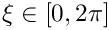 We wish to compute the position vector 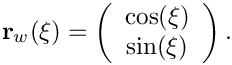 to the deformed ring's centreline. Here is a sketch of the problem:
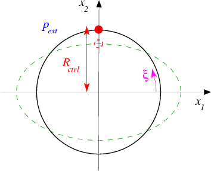
Sketch of the buckling ring. Note that we have chosen the Eulerian coordinate axes so that they coincide with the ring's lines of symmetry. |
 and wall thickness 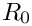, subject to a spatially-constant external pressure 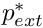. We choose the undeformed radius
and wall thickness 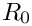, subject to a spatially-constant external pressure 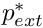. We choose the undeformed radius
The expected deformation and the displacement-control formulation of the problem
Standard linear stability analysis [see, e.g., G.J. Simitses "An introduction to the elastic stability of structures", Prentice-Hall, (1976)] predicts the ring to become unstable to non-axisymmetric perturbations with an azimuthal wavenumber of 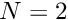 at a pressure of
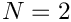
For 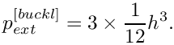 we therefore expect the ring to deform into a shape similar to the one indicated by the dashed line in the above sketch. As the ring buckles non-axisymmetrically, the material point on the vertical symmetry line (i.e. the material point with Lagrangian coordinate 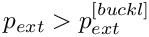 ) moves radially inwards. This makes it an excellent control point for this problem as we can "sweep" through the entire range of the ring's post-buckling deformation by varying its  – coordinate from
– coordinate from  (corresponding to the undeformed, axisymmetric configuration) to 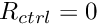 (corresponding to a configuration in which the ring is collapsed to the point of opposite wall contact). We note that Flaherty, Keller & Rubinow's analysis [SIAM J. Appl. Math 23, 446–455 (1972)], based on an inextensible beam model, predicts opposite wall contact to occur at an external pressure of
(corresponding to the undeformed, axisymmetric configuration) to 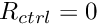 (corresponding to a configuration in which the ring is collapsed to the point of opposite wall contact). We note that Flaherty, Keller & Rubinow's analysis [SIAM J. Appl. Math 23, 446–455 (1972)], based on an inextensible beam model, predicts opposite wall contact to occur at an external pressure of
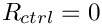
To apply displacement control we change the formulation of the problem from
|
Determine the position vector to the centreline of the deformed ring, , in terms of the Lagragian coordinate , for a given value of the external pressure 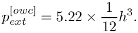 . |
to
|
Determine the position vector to the centreline of the deformed ring, , in terms of the Lagragian coordinate , for an external pressure 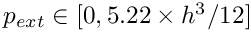 that is such that the vertical coordinate of the control point is equal to 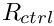 where 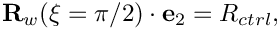 is given. |
 , i.e.
, i.e.
Results
The figure below shows computed ring shapes for 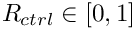. They were obtained in two phases: During the first phase of the computation we subjected the ring to a load of the form
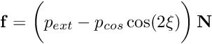
where 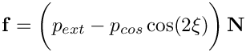 is the outer unit normal on the deformed ring and is a small cosinusoidal perturbation to the external pressure which forces the ring to buckle "in the right direction". The undeformed configuration was used as the initial guess for an initial computation with 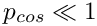 [or, in the case of displacement control, 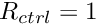 ]. Subsequently we increased [or decreased  ] in small steps, using the previously computed solutions for the displacement field [and ] as initial guesses for the unknowns. This procedure was continued until the ring was collapsed up to the point of opposite wall contact. During the second phase, we set 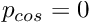 and reversed the procedure to re-trace the deformation to the axisymmetric state.
] in small steps, using the previously computed solutions for the displacement field [and ] as initial guesses for the unknowns. This procedure was continued until the ring was collapsed up to the point of opposite wall contact. During the second phase, we set 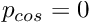 and reversed the procedure to re-trace the deformation to the axisymmetric state.

The figure below illustrates the load/displacement characteristics computed by this procedure. The graph shows the radii of two material points on the ring: The green line shows the radius 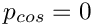 of the control point; the red line the radius 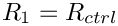 of the material point located at 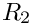, i.e. the material point located on the ring's second line of symmetry. (Because of the symmetry of the buckling pattern this line may also be interpreted as the load-displacement curve for the control point when the ring buckles in the "opposite" direction). The dash-dotted blue line shows the load/displacement curve when the ring deforms axisymmetrically. In this mode, the radii of the two material points are obviously identical. Finally, the dashed lines shows the load/displacement path when the ring is subjected to a non-zero perturbation pressure, 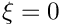 , which deforms it non-axisymmetrically so that 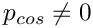 even for 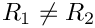 .
The diagram clearly illustrates the enormous change in stiffness when the ring changes from the axisymmetric to the non-axisymmetric regime. The non-axisymmetric regime emanates from the axisymmetric state (via a supercritical bifurcation at a pressure of 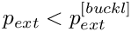 , as predicted by the linear stability analysis) and opposite wall contact occurs at 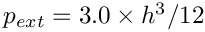 , in perfect agreement with Flaherty, Keller & Rubinow's theoretical analysis.
Applying displacement control in oomph-lib
To facilitate the solution of solid mechanics problems with displacement-control techniques, oomph-lib provides a DisplacementControlElement, which may be used to add the displacement control constraint to the global system of equations that is solved by Newton's method. Applying displacement control in a solid mechanics problem involves the following straightforward steps:
- Formulate the solid mechanics problems in its "standard
form":
In this formulation the (scalar) load level is prescribed and the displacements are regarded as unknowns.
- Change the representation of the (scalar) load level to allow it to be an unknown in the Problem:
In the original formulation, the load level is likely to have been represented by a double precision number. To allow the load level to be regarded as an unknown, it must be represented by a value in aDataobject. Currently,oomph-lib'sDisplacementControlElementexpects the load level to be the one-and-only value in the loadDataobject. We note that computations with a prescribed load are still possible and simply require pinning of the value that represents the load.
- "Tell" the solid mechanics elements that the load level is a (potential) unknown:
Since the load on the solid mechanics elements affects their residuals, their elemental Jacobian matrices (which contain the derivatives of the entries in the elemental residual vector with respect to all unknowns that affect it) must take the dependence on the (potentially) unknown load level into account. This may be achieved by adding theDataobject that stores the load level to the element's externalData(i.e.Datawhose values affect the element's residual vector, but whose values are not determined by the element). ExternalDatais automatically included in an element's equation numbering procedure. Furthermore, since the elemental Jacobian matrices ofSolidFiniteElementsare generated by finite-differencing, the derivatives of the element's residual vector with respect to the load level are computed automatically. Consequently, the application of displacement control does not require a re-implementation of the solid mechanics elements.
- Identify a material point in the solid that can serve as a "control point":
Ideally, this control point should move monotonically along one of the (Eulerian) coordinate directions as the deformation of the solid body increases.
- Create a
DisplacementControlElementand add it to theMesh.
TheDisplacementControlElementadds the displacement constraint to the global system of equations and thus provides the additional equation required to determine the unknown load level. We note that theDisplacementControlElementhas two constructors:
- The first version expects a pointer to the
Dataobject whose one-and-only value contains the unknown load level. This version of the constructor is appropriate in cases where the loadDatahas already been created elsewhere (as described above).
- The second version of the constructor creates the required load
Dataobject internally and provides access to it via a pointer-based access function.
- The first version expects a pointer to the
- Done!
Set the desired value of the control displacement and solve the problem.
The driver code discussed below illustrates these steps.
Global parameters and functions
The namespace Global_Physical_Variables, used to define the problem parameters and the load function, is very similar to that used in the previous example without displacement control. They main difference is that the adjustable load (the external pressure ) is now defined as a Data value, rather than a double precision number. This allows it to become an unknown in the problem when displacement control is used.
The driver code
The main function builds two different versions of the problem, demonstrating the use of displacement control in the cases when the Data object that contains the adjustable load already exists, or has to be created by the DisplacementControlElement, respectively. The two versions only differ in the The constructor.
The problem class
The problem class is very similar to the one used
in the previous example without displacement control. Here we store the number of solid mechanics elements in the Problem's private member data since we will add the DisplacementControlElement to the mesh.
The constructor
The first half of the constructor is similar to the one used in the previous example without displacement control. We create a GeomObject (an Ellipse with unit half axes) to define the ring's undeformed geometry, and build the 1D Lagrangian mesh. Note that, because of the symmetry of the buckling pattern, we only discretise one quarter of the domain.
Next we apply the symmetry boundary conditions: Zero vertical [horizontal] displacements and infinite [zero] slope at 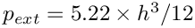 [at 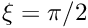 ]. (See the previous example for a more detailed discussion of the boundary conditions for beam elements.)
We now distinguish between the cases with and without displacement control:
- Case 1: No displacement control
If we don't use displacement control, we create theDataobject whose one-and-only value stores the adjustable load level (the external pressure), and store the pointer to the newly createdDataobject inGlobal_Physical_Variables::Pext_data_pt. Since the value of the external pressure is prescribed (i.e. not an unknown in the problem), we pin the value.
// Normal load incrementation//===========================if (!Displ_control){// Create Data object whose one-and-only value contains the// (in principle) adjustable load//Pin the external pressure because it isn't actually adjustable.
- Case 2: Displacement control
If displacement control is used, we identify the control point (the material point at the "end" of the last element in the mesh) and the (Eulerian) coordinate direction (the vertical coordinate) in which its position is to be controlled:
// Displacement control//=====================else{// Choose element in which displacement control is applied: the last oneSolidFiniteElement* controlled_element_pt=dynamic_cast<ELEMENT*>(mesh_pt()->element_pt(Nbeam_element-1));// Fix the displacement in the vertical (1) direction...unsigned controlled_direction=1;//... at right end of the control elementVector<double> s_displ_control(1);s_displ_control[0]=1.0;// Pointer to displacement control elementDisplacementControlElement* displ_control_el_pt;
- Case 2a: Load
Datadoes not yet exist
We can now call the constructor for theDisplacementControlElement:
// Build displacement control elementdispl_control_el_pt=new DisplacementControlElement(controlled_element_pt,s_displ_control,controlled_direction,
This version of the constructor creates the loadDataobject whose one-and-only value stores the adjustable load. We obtain a pointer to the newly-createdDataobject from the access functionDisplacementControlElement::displacement_control_load_pt()and store it inGlobal_Physical_Variables::Pext_data_ptto make it accessible to the load functionGlobal_Physical_Variables::press_load(...)
// The constructor of the DisplacementControlElement has created
// a new Data object whose one-and-only value contains the// adjustable load: Use this Data object in the load function:Global_Physical_Variables::Pext_data_pt=displ_control_el_pt->displacement_control_load_pt();
- Case 2b: The load
Dataalready exists
In some applications, theDataobject that specifies the adjustable load level might already have been created elsewhere in theProblem. For such cases,oomph-libprovides an alternative constructor whose argument list includes the pointer to the already-existing loadDataobject. To demonstrate its use we create a suitableDataobject and store it in theProblem's"global"Data(see "Internal" and "external" Data in elements and "global" Data in Problems for a more detailed discussion of this step) and pass it to the constructor:
// Demonstrate use of displacement control with some existing data//----------------------------------------------------------------else{// Create Data object whose one-and-only value contains the// adjustable load// Currently, nobody's "in charge of" this Data so it won't// get included in any equation numbering schemes etc.// --> declare it to be "global Data" for the Problem// so the Problem is in charge and will perform such tasks.add_global_data(Global_Physical_Variables::Pext_data_pt);// Build displacement control element and pass pointer to the// already existing adjustable load Data.displ_control_el_pt=new DisplacementControlElement(controlled_element_pt,s_displ_control,controlled_direction,}
In both cases, we add the newly createdDisplacementControlElementto the mesh to ensure that it is included in theProblem.
// Add the displacement-control element to the meshmesh_pt()->add_element_pt(displ_control_el_pt);} - Case 2a: Load
Next, we execute the usual loop over the elements to pass the pointers to the problem's non-dimensional parameters the elements. If displacement control is used, we also pass the pointer to the load Data object to the elements' external Data to indicate that the element's residual vectors depends on the unknown load. Finally, we set up the equation numbering scheme.
Post-processing
The post-processing function documents the ring shapes and adds the load/displacement characteristics of the two material points on the ring's symmetry lines to the trace file.
The parameter study
We start by opening a trace file to record the load/displacement characteristics, and output the initial configuration.
Next we set up the increment of the control parameter, choosing the displacement or load increments such that the ring's deformation is increased from the axisymmetric initial state to total collapse with opposite wall contact in 11 steps.
Without displacement-control the Newton method can require a large number of iterations, therefore we increment the maximum number of iterations.
We start the parameter study by increasing the ring's compression (either by increasing the external pressure or by reducing the 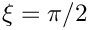 - coordinate of the control point) with 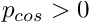 to induce buckling in the desired direction.
Then we reset the perturbation pressure to zero and reduce the ring's collapse by decreasing the external pressure (or by increasing the - coordinate of the control point).
Done!
Further comments and Exercises
"Internal" and "external" Data in elements and "global" Data in Problems
In the section The constructor we encountered two different constructors for the DisplacementControlElement.
- The first version (in which the
Dataobject that contains the unknown load value is created by the constructor) is most natural for the problem considered here as the loadDatais created specifically for the purpose of allowing displacement control to be applied. It therefore natural to regard theDisplacementControlElementas being "in charge of" the loadData, and storing it in the element's "internal Data". (Recall that onceDatais stored in an element's internalData, the element becomes responsible for performing tasks such as equation numbering, timestepping, etc. that must be performed exactly once for eachDatavalue in theProblem.)
- The second version of the constructor is appropriate for problems in which the load
Datahas already been created by another element, implying that the other element is already "in charge" of theDataobject and performs the equation numbering, timestepping etc. for its values. In that case, the loadDatais regarded as "external Data" for theDisplacementControlElement.
In our example code, we simulated the second scenario by creating the load Data object before calling the second version of the constructor. While this ensures that the load can be regarded as an unknown in the problem, the Problem remains "unaware" of the additional unknown, as none of the elements in the Problem's mesh is "in charge" of it. While this is clearly a somewhat artificial scenario, oomph-lib provides a mechanism for handling such cases: Adding a Data object to the Problem's "global Data" by calling
puts the Problem itself "in charge" of this Data.
Exercises
- Run the code without displacement control (e.g. by setting the boolean flag
displ_controlin the main function tofalse) and confirm that a non-zero perturbation pressure, is required to induce the ring's non-axisymmetric collapse This shows that the numerical model is not as sensitive to non-axisymmetric perturbations as the theory suggests – roundoff error alone is not sufficient to initiate non-axisymmetric buckling. Use this version of the code to compute the load-displacement characteristics of the ring in its axisymmetric state, i.e. the dash-dotted blue line in the bifurcation diagram shown at the beginning of this document.
- Run the code without displacement control and explain why during the second phase of the parameter study (when 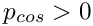 ), the Newton method converges very slowly and provides very inaccurate results when
 .
.
- We claimed that the load/displacement curves for the post-buckling regime emanate from the axisymmetric branch at 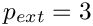 , yet closer inspection of the bifurcation diagram shows a small kink in the post-buckling curves near the bifurcation. Explain what causes this kink and why it is practically impossible to avoid its occurrence. [Hint: The load/displacement curves contain individual data points, each one of which corresponds to a solution of the governing equations. The solutions were obtained by Newton's method which tends to converge to a solution in which the unknowns are "close" to their values at the beginning of the iteration. Is it obvious that an initial guess that corresponds to a non-axisymmetric configuration is necessarily "closer" to another non-axisymmetric solution than to a nearby axisymmetric solution?]
- The computation shown above was performed with the default non-dimensional wall thickness of . Repeat the computation with smaller wall-thicknesses (the previous example shows how to change the default value) and confirm the theoretical predictions for the dependence of 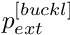 and 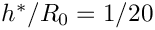 on 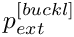.
- Comment out the command that stores the load
Dataas globalDataand explain why the code fails with a segmentation fault. Use theProblem::self_test()function to identify the problem. [Hint: What is the default value for aDataobject's global equation numbers? What happens if this default is not overwritten? Why is the default assignment not overwritten?]
Source files for this tutorial
- The source files for this tutorial are located in the directory:
demo_drivers/beam/steady_ring/
- The driver code is:
demo_drivers/beam/steady_ring/steady_ring.cc
PDF file
A pdf version of this document is available.